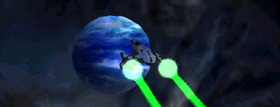

| Amananth | Hyperial | Octavius | Quantar | Solrain |
a brief history...the Great CollapseIt was a time of light, it was a time of darkness. The four systems had prospered greatly within the balance that only peaceful coexistence could bring. Each of the known systems had something to offer the others, who were all eager to receive. The ancient axes which had been ground for millennia between the traditionalists of the Octavian empire and the rebellious commonwealth of Solrain had long since been buried. The vicious, seemingly eternal struggles between Quantar and Hyperial forces had been peacefully resolved. Then occurred the unthinkable... an event of religious armageddon for some, an event of impossible chaotic chance for others. To this day, no one fully understands what happened, but the memoirs of Desigrey Hettir, Cornea Station's first commanding governor, attempt to provide the simplest description possible.
- Desigrey Hettir, Memoirs of Time That Was
 When the dust settled, chaos and confusion were all that remained. The planet Solrain, so long the seat tribunal of the four systems, had vanished. Although remote contact with the planet's massive informational databases was still possible, no one was able to locate its physical position. All communication between the systems was lost. Map of the Known Sectors (AT, After TRI) (right-click to zoom in) first flightSome millennia passed, as the inhabitants of the sixth planet of the Solrain system began to rediscover the mysteries of the new world around them. The ancient technologies that powered the great civilization were mysteriously ineffective. Indeed, it was a great task to rediscover the basic natural principles which now seemed to govern the galaxy. The Solrain Reconstruction Initiative was founded in order to overcome these obstacles, and begin the re-establishment of what once was. After some time, SRI scientists discovered strange fluctuations in gravity fields within the galaxy. After much trial and error, the first gyroscopic gravity de-fluxer was created. The great Sorian thinker, Watt Jeffries Samon, conjectured that if one could counter the gravitational fluctuations, long distance space flight could again become a reality. His theories proved true, and the first "jumpgate" was born. The gravity anomalies in certain points of space became commonly known as "gravity wells". W.J. Samon's plans were to build artificial de-fluxers surrounding a gravity well, thus allowing physical matter to simultaneously exist in 2 completely different points in space at the same time. If it worked, a spacecraft would be able to "jump" between the two points instantly. Two Sorian years after construction began, the brave initiates for the maiden voyage boarded the virgin craft built to travel through the first jumpgate, christened the "Revival I". They carried with them the hopes and dreams of a broken system and its life forms. It was the chance that all had been waiting for, to restore the golden age that the history databases described with such honest detail. Unfortunately, triumph led to tragedy as the Revival hurtled towards the jumpgate... it vanished, and never returned... a communionDeep in Quantar space, a strange bluish pyramid appeared in the heavens, quickly noted by Quantar astronomers. It was quickly decided that a probe should be sent to investigate the strange ornament, which crackled with unknown energies. As the probe came closer, an alien craft was found drifting less than a click away from the pyramid. The craft was covered in a liquid black film and whatever was alive inside was now dead; charred bodies shaken into pieces as if struck by an ancient disrupter. Later research confirmed that co-existing in multiple points of space simultaneously causes a specific set of synapses in the normal human brain to overload and misfire. This malfunction sets off an enormous chain reaction of gravitic energies within the body. In the case of the Revival I, this caused spontaneous combustion of all of her crew. Ancient Quantar religious texts prophesized a "visitor of the night, who swims the bottomless seas...", which was instantly applied to the find. The prophesy predicted a re-dawn of prosperity. This generated massive excitement and hope for the Quantar people, and so an unmanned ship was built to send into the pyramid in hopes of fulfilling the prophecy. The craft contained an assortment of messages in various languages, hoping for some communication with whomever was responsible for the pyramid's appearance. The mission met with success, and dialog began between the people of Quantar and Solrain. Not long after initial contact, Quantar scientists discovered the genetic breakthrough which allowed safe passage of life forms through the gravity wells. Quantar joined the Solrian Reconstruction Initiative, which then became known as it is today, simply "The Reconstruction Initiative". TRI began to grow in power and credibility.
[UBS auto-notification: some portions of the following paragraph have been altered by:] The genetic alteration, however, was determined to have some highly desirable side effects, most notably that the recipient typically gains super-human abilities within an environment of constant low gravitational force. The Reconstruction Initiative proudly released these results and began a large scale recruitment program delivering fame and fortune for all who signed. Rules and regulations, law and order, ethics and morals were all suspended from the Initiatives' charter in favor of rapid expansion. The move proved valuable to TRI as all manner of life forms from all corners of the known systems began joining in hopes of a brighter future . . .
|